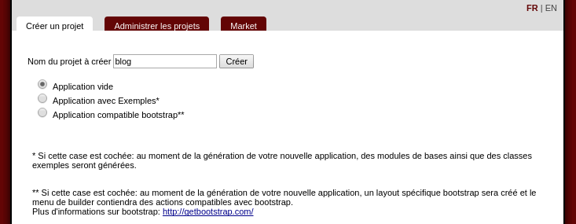
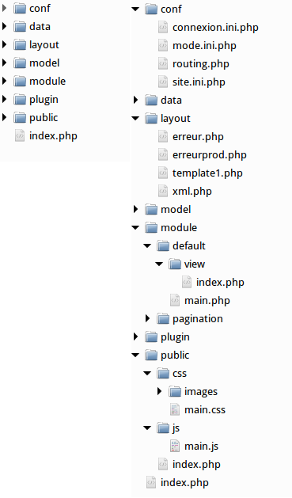
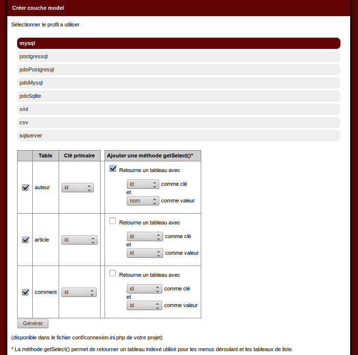
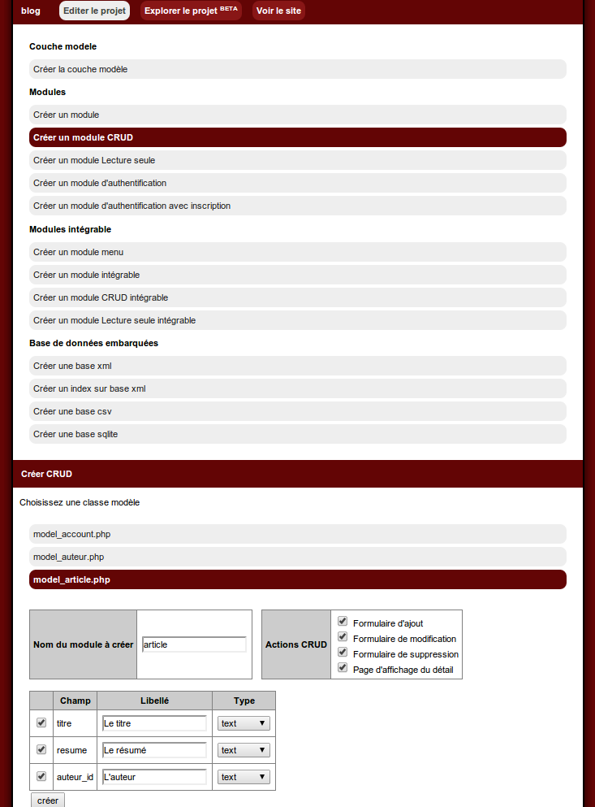
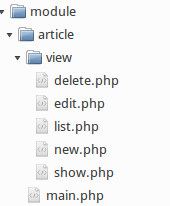

Tutoriaux (translate in progress)
Create a new websiteGenerate the abstract object layer class
Create a CRUD module (Create Read Update Delete)
Generate a menu module for your website
Add an authenticate module on your page/module
Provide an upload features
Create an embedded CRUD module (Create Read Update Delete)
Check the data before saving
Create your own rule check
Create a form more easily
Manage the permissions (ACL)
Use embedded CRUD module
Use Zend Framework 1.* class
Use Zend Framework 2.* class
Use Zend Framework 3.* class
Use Symfony 4.* class
Use token to protect you for xsrf
A question ? The FAQ is here
Create a new website
Installation
Download the mkframework by clic on the link in the download page. You get a zip archive.Unpack it in you web directory (directory www/ htdocs/ or ever depends on your apache install)
In this tutorial, we think you have move the mkframework in the root directory, and you can access it by http://localhost/mkframework_v4_XX_YY (XX, YY depends on the version you download)
For information the zip contains the web generator (builder) and the framework library
All website created links the builder mkframework library (you can copy/move it if you want, you have to configure the path in the conf/site.ini.php of your website)
Use the builder to create your website
Open you browser on http://localhost/mkframework_v4_XX_XX/Clic on tab "Créer un projet"

Fill the application name, for example "blog"

The checkbox input "Générer avec exemples" indicate if the builder will create a website with some examples page
This examples pages make your learn more easy
Clic on button "créer"
The builder will create an empty website in Projects/blog

Generate the abstract object layer class
Create tables in your database
For this example, we will use a mysql databaseExecute this SQL query to create tables
CREATE TABLE `article` (
`id` int(11) NOT NULL auto_increment,
`titre` varchar(50) NOT NULL,
`resume` text NOT NULL,
`auteur_id` int(11) NOT NULL,
PRIMARY KEY (`id`)
);
CREATE TABLE `auteur` (
`id` int(11) NOT NULL auto_increment,
`nom` varchar(30) NOT NULL,
`prenom` varchar(30) NOT NULL,
PRIMARY KEY (`id`)
);
CREATE TABLE `comment` (
`id` int(11) NOT NULL auto_increment,
`text` text NOT NULL,
`article_id` int(11) NOT NULL,
PRIMARY KEY (`id`)
);
<h2>Configure the connection profile</h2>
When you create a website, the builder create a directory hierarchy wich contains library, css, configure files...
The builder can read the configuration file.
The connection profil file contains multiple connection profil, it permit to configure the type of database, username/password...
If you want, you can use a xml/csv database for your users and mysql/postgresl for your articles... (each table should be hosted where you want easily)
You can manage you configuration file conf/connexion.ini.php
For example, our mysql database is hosted localy
mysql.dsn="mysql:dbname=blog;host=127.0.0.1"
mysql.sgbd=pdo_mysql
mysql.hostname=127.0.0.1
mysql.database=blog
mysql.username=root
mysql.password=pass
Generate the abstract model layer class
The framework is base on a MVC structure, you have to create the M: Model that provide you the database interactionThis is very simple with the builder, clic on the tab "Administrer les projets", then clic on your poject "blog"

Clic on button "Créer couche model"

Clic on the link of your configuration profil, there "mysql"
You can see the list of table in your database

Clic on the button "generer" to generate the abstract model layer class

This is an example of the article model class generated:
<?php
class model_article extends abstract_model{
protected $sClassRow='row_article';
protected $sTable='article';
protected $sConfig='mysql';
protected $tId=array('id');
public static function getInstance(){
return self::_getInstance(__CLASS__);
}
public function findById($uId){
return $this->findOne('SELECT * FROM '.$this->sTable.' WHERE id=?',$uId );
}
public function findAll(){
return $this->findMany('SELECT * FROM '.$this->sTable);
}
}
class row_article extends abstract_row{
protected $sClassModel='model_article';
/*exemple jointure
public function findAuteur(){
return model_auteur::getInstance()->findById($this->auteur_id);
}
*/
/*exemple test validation*/
private function getCheck(){
$oPluginValid=new plugin_valid($this->getTab());
/* renseigner vos check ici
$oPluginValid->isEqual('champ','valeurB','Le champ n\est pas égal à '.$valeurB);
$oPluginValid->isNotEqual('champ','valeurB','Le champ est égal à '.$valeurB);
$oPluginValid->isUpperThan('champ','valeurB','Le champ n\est pas supé à '.$valeurB);
$oPluginValid->isUpperOrEqualThan('champ','valeurB','Le champ n\est pas supé ou égal à '.$valeurB);
$oPluginValid->isLowerThan('champ','valeurB','Le champ n\est pas inférieur à '.$valeurB);
$oPluginValid->isLowerOrEqualThan('champ','valeurB','Le champ n\est pas inférieur ou égal à '.$valeurB);
$oPluginValid->isEmpty('champ','Le champ n\'est pas vide');
$oPluginValid->isNotEmpty('champ','Le champ ne doit pas être vide');
$oPluginValid->isEmailValid('champ','L\email est invalide');
$oPluginValid->matchExpression('champ','/[0-9]/','Le champ n\'est pas au bon format');
$oPluginValid->notMatchExpression('champ','/[a-zA-Z]/','Le champ ne doit pas être a ce format');
*/
return $oPluginValid;
}
public function isValid(){
return $this->getCheck()->isValid();
}
public function getListError(){
return $this->getCheck()->getListError();
}
}
?>
Create a CRUD module (Create Read Update Delete)
Here you have generated the model layer class, configure the connexion profi and generated model class.You can easily generate a module which will permit you to add an article, list, edit and delete one of them.
We call this the CRUD: Create Read Update Delete, this will be generated by the builder.
Clic on the link "Créer un module CRUD"

Clic on the model class to use "model_article"

You can see the field list of your table, with some input parameters to personalize the CRUD generation.
Clic on the button "créer"

The builder generate your CRUD module article:
In detail:
- Create: a link on the rows array, and a form to add a row
- Read: a page that contain a rows array which list rows in databas
- Update: a link and a form page to update a row
- Delete: a link and a form page to confirm deletion

Generate a menu module for your website
Introduction
In your website, you want to create a menu module.Il your module, for example article (file module/article/main.php)
Your file is like this code:
<?php
class module_article extends abstract_module{
public function before(){
$this->oLayout=new _layout('template1');
}
public function _index(){
//on considere que la page par defaut est la page de listage
$this->_list();
}
public function _list(){
$oArticleModel=new model_article;
$tArticle=$oArticleModel->findAll();
$oView=new _view('article::list');
$oView->tArticle=$tArticle;
$oView->tColumn=$oArticleModel->getListColumn();//array('id','titre');//
$this->oLayout->add('main',$oView);
}
(...)
The fact to add a menu is like add on your website layout a module on a specific place.
The menu module (note: to embedded a module, it will return to you its view object)
<?php
Class module_menu extends abstract_module{
public function _left(){
//you link array wich contains as key the label, and as value the couple module/action
$tLink=array(
'Articles' => 'article::list',
'Archives' => 'article::archives',
'Prive' => 'prive::list',
);
//if you want to manage ACL (cf tutorial about ACL)
if(_root::getACL()->can('edit','acl') ){
$tLink['Manage accounts']='account::list';
$tLink['Manage groups']='group::list';
$tLink['Manage permission']='permission::list';
}
$oView=new _view('menu::index');
$oView->tLink=$tLink;
return $oView;
}
}
?>
Tye view menu (file module/menu/view/index.php)
<ul>
<?php foreach($this->tLink as $sLibelle => $sLink): ?>
<?php if(_root::getParamNav()==$sLink):?>
<li class="selectionne"><a href="<?php echo $this->getLink($sLink) ?>"><?php echo $sLibelle ?></a></li>
<?php else:?>
<li><a href="<?php echo $this->getLink($sLink) ?>"><?php echo $sLibelle ?></a></li>
<?php endif;?>
<?php endforeach;?>
</ul>
You have two solutions:
Solution 1: use the static method addModule(placeholder, couple module::action)
For example to add the action left from the menu module on the placeholder "navigation"
$this->oLayout->addModule('navigation','menu::left');
Or if you switch menu between every action, you can add different menu in each action
Solution 2: the mkframework use view as object, so you can instanciate one and get it
In your module
$oModuleMenu=new module_menu;
$oViewMenu= $oModelMenu->_left();
$this->oLayout->add('navigation',$oViewMenu);
Add an authenticate module on your page/module
Add an authenticate module means 4 things:1. create a model class to manage connection account (with couple login/password)
2. create a module to mange the authentication
3. indicate in the configure file the couple module/action which will manage authentication (private access)
4. indicate pages (actions) where you need to be authenticate
Etape 1: create a model class to manage connection accounts (with couple login/password)
Create a model class for connection accounts, for example "acccount"For this example, we save it in a mysql database
There will contains "login" and "password"
<?php
class model_account extends abstract_model{
protected $sClassRow='row_account';
protected $sTable='account';
protected $sConfig='mysql';
protected $tId=array('id');
public static function getInstance(){
return self::_getInstance(__CLASS__);
}
public function findById($uId){
return $this->findOne('SELECT * FROM '.$this->sTable.' WHERE id=?',$uId );
}
public function findAll(){
return $this->findMany('SELECT * FROM '.$this->sTable);
}
public function getListAccount(){
$tAccount=$this->findAll();
$tLoginPassAccount=array();
if($tAccount){
foreach($tAccount as $oAccount){
$tLoginPassAccount[$oAccount->login][$oAccount->pass]=$oAccount;
}
}
return $tLoginPassAccount;
}
}
class row_account extends abstract_row{
protected $sClassModel='model_account';
/*exemple jointure
public function findAuteur(){
return model_auteur::getInstance()->findById($this->auteur_id);
}
*/
/*exemple test validation*/
private function getCheck(){
$oPluginValid=new plugin_valid($this->getTab());
/* renseigner vos check ici
$oPluginValid->isEqual('champ','valeurB','Le champ n\est pas égal à '.$valeurB);
$oPluginValid->isNotEqual('champ','valeurB','Le champ est égal à '.$valeurB);
$oPluginValid->isUpperThan('champ','valeurB','Le champ n\est pas supé à '.$valeurB);
$oPluginValid->isUpperOrEqualThan('champ','valeurB','Le champ n\est pas supé ou égal à '.$valeurB);
$oPluginValid->isLowerThan('champ','valeurB','Le champ n\est pas inférieur à '.$valeurB);
$oPluginValid->isLowerOrEqualThan('champ','valeurB','Le champ n\est pas inférieur ou égal à '.$valeurB);
$oPluginValid->isEmpty('champ','Le champ n\'est pas vide');
$oPluginValid->isNotEmpty('champ','Le champ ne doit pas être vide');
$oPluginValid->isEmailValid('champ','L\email est invalide');
$oPluginValid->matchExpression('champ','/[0-9]/','Le champ n\'est pas au bon format');
$oPluginValid->notMatchExpression('champ','/[a-zA-Z]/','Le champ ne doit pas être a ce format');
*/
return $oPluginValid;
}
public function isValid(){
return $this->getCheck()->isValid();
}
public function getListError(){
return $this->getCheck()->getListError();
}
}
?>
Etape 2: créer ce module qui gerera l'authentification
Appelons-le par exemple "auth"
<?php
class module_auth extends abstract_module{
public function before(){
//on active l'authentification
_root::getAuth()->enable();
$this->oLayout=new _layout('template1');
}
public function _login(){
$oView=new _view('auth::login');
$this->oLayout->add('main',$oView);
if(_root::getRequest()->isPost() ){
$sLogin=_root::getParam('login');
//on stoque les mots de passe hash en sha1 pour l'exemple
$sPass=sha1(_root::getParam('password'))*;
$tAccount=model_account::getInstance()->getListAccount();
//on va verifier que l'on trouve dans le tableau retourn par notre model "account"
//l'entre $tAccount[ login ][ mot de passe hash* ]
if(_root::getAuth()->checkLoginPass($tAccount,$sLogin,$sPass)){
_root::redirect('prive::list');
}
}
}
public function _logout(){
_root::getAuth()->logout();
}
public function after(){
$this->oLayout->show();
}
}
Etape 3: indiquer dans le fichier de config ce couple module/action qui gerera l'authentification
Dans le fichier conf/site.ini.php de votre site
[auth]
;note : >= php5.2 dans le php.ini
session.cookie_httponly=1
session.use_cookies = 1
session.use_only_cookies = 1
session.cookie_secure=1
enabled=0
class=plugin_auth
module=auth::login
session.timeout.enabled=1
session.timeout.lifetime=180
module=auth::login
note: tout le module "auth" sera accessible
Etape 4: indiquer les pages où l'authentification est nécessaire
Il suffit d'ajouter dans chaque methode "before" de module à restreindre
_root::getAuth()->enable();
Donc soit vous indiquer que tout un module est restreint en mettant cette appel dans before
Soit vous copier cette ligne dans la methode before d'une page particulière
Par exemple pour restreindre la page article::edit
//methode appele avant la page "edit"
public function before_edit(){
_root::getAuth()->enable();
}
public function _edit(){
//votre page "edit"
Permettre l'upload d'un fichier
Introduction
Vous pouvez avoir besoin sur un site web par exemple de permettre à vos utilisateurs d'uploader leur photo de profil.Voici comment gérer un upload.
Dans notre exemple, nous partons de l'existence d'une table "account" (dont la clé primaire est "id") contenant un champ "profilPicture" et d'un module s'appellant "profil".
Coté vue
Ecrivez votre formulaire, en prenant bien soin de préciser l'attribut "enctype" dans votre balise "form".Editer le fichier module/profil/view/uploadProfilPicture.pho
<form action="" method="POST" enctype="multipart/form-data">
Photo de profil : <input type="file" name="profilPicture" />
<?php if($this->oAccount->profilPicture!=''):?>
<img src="<?php echo $this->oAccount->profilPicture ?>" />
<?php endif;?>
<input type="submit" value="Sauvegarder"/>
</form>
Coté controlleur
Dans l'action de cette page d'upload, nous allonsd'une part fare appel à la vue précedemment créée
et d'autre part gérer la reception, l'upload puis l'enregistrement du chemin de l'image dans le champ "profilPicture"
class module_private extends abstract_module{
public function before(){
(...)
//recuperation de l'id du compte de l'utilisateur connect
$this->id=_root::getAuth()->getAccount()->id;
}
(...)
public function _uploadProfilPicture(){
$this->checkUpload();
$oAccount=model_Account::getInstance()->findById( $this->id );
$oView=new _view('profil::uploadProfilPicture');
$oView->oAccount=$oAccount;
}
private checkUpload(){
if(!_root::getRequest()->isPost() ){ //si ce n'est pas une requete POST on ne soumet pas
return null;
}
$oAccount=model_Account::getInstance()->findById( $this->id );
$sColumn='profilPicture';
$oPluginUpload=new plugin_upload($sColumn);
if($oPluginUpload->isValid()){
$sNewFileName='data/upload/'.$sColumn.'_'.date('Ymdhis');
$oPluginUpload->saveAs($sNewFileName);
$oAccount->profilPicture=$oPluginUpload->getPath();
$oAccount->save();
}
}
}
Créer un module CRUD intégrable (Create Read Update Delete)
Cette partie permet de générer un module que vous pourrez intégrer dans un autre module.Pour cela cliquez sur "Créer un module CRUD intégrable"

Cliquez ensuite sur la classe modèle à utiliser: ici model_article

On voit sur cet écran la liste des champs de notre table, avec une checkbox permettant de chosir ceux à afficher dans notre CRUD.
On clique sur le bouton "créer"

Et voila le module crud intégrable de votre table article est généré
Au menu:
- Create: un lien plus une page contenant un formulaire d'ajout
- Read: une page contenant un tableau listant les éléments de la table
- Update: un lien plus une page contenant un formulaire de modification
- Delete: un lien plus une page de confirmation de suppression
Il vous suffit de copier dans le fichier main.php de votre module principal les lignes suivantes
//on instancie ce module integrable
$oModuleArticle=new module_article;
//on recuere la vue de ce module
$oViewArticle=$oModuleArticle->_index();
//on assigne cette vue a notre layout
$this->oLayout->add('main',$oViewArticle);
note: dans le cas de "poupées russes" de modules, il vous faut assigner la vue retournée au module, qui devra l'afficher
Ainsi pour un module A incluant un module B (intégrable) qui incluerait lui-même un module C (intégrable)
Au niveau du module B
$oViewB=new _view('monModuleB::notreVueB');
//on instancie le module integrable C
$oModuleC=new module_monModuleC;
//on recuere la vue de ce module C
$oViewModuleC=$oModuleC->_index();
//on assigne la vue C la vue B ;)
$oViewB->oViewModuleC=$oViewModuleC;
qu'on affichera dans la vue B ;)
<?php echo $this->oViewModuleC->show()?>
Vérifier les entrées d'un formulaire
Introduction
La vérification des entrées de formulaire se passe coté "model" elle passe par un retour d'un tableau des erreurs trouvées qui seront affichées par la suite dans la vue.Nous allons dans notre exemple ajouter des contrôle sur une table client
Coté model
Coté model, éditer votre classe row_client
class row_client extends abstract_row{
protected $sClassModel='model_client';
/*exemple jointure
public function findAuteur(){
return model_auteur::getInstance()->findById($this->auteur_id);
}
*/
/*exemple test validation*/
private function getCheck(){
$oPluginValid=new plugin_valid($this->getTab());
/* renseigner vos check ici
$oPluginValid->isEqual('champ','valeurB','Le champ n\est pas égal à '.$valeurB);
$oPluginValid->isNotEqual('champ','valeurB','Le champ est égal à '.$valeurB);
$oPluginValid->isUpperThan('champ','valeurB','Le champ n\est pas supé à '.$valeurB);
$oPluginValid->isUpperOrEqualThan('champ','valeurB','Le champ n\est pas supé ou égal à '.$valeurB);
$oPluginValid->isLowerThan('champ','valeurB','Le champ n\est pas inférieur à '.$valeurB);
$oPluginValid->isLowerOrEqualThan('champ','valeurB','Le champ n\est pas inférieur ou égal à '.$valeurB);
$oPluginValid->isEmpty('champ','Le champ n\'est pas vide');
$oPluginValid->isNotEmpty('champ','Le champ ne doit pas être vide');
$oPluginValid->isEmailValid('champ','L\email est invalide');
$oPluginValid->matchExpression('champ','/[0-9]/','Le champ n\'est pas au bon format');
$oPluginValid->notMatchExpression('champ','/[a-zA-Z]/','Le champ ne doit pas être a ce format');
*/
return $oPluginValid;
}
public function isValid(){
return $this->getCheck()->isValid();
}
public function getListError(){
return $this->getCheck()->getListError();
}
}
Dans notre exemple, nous allons vérifier que les noms et prenoms sont bien rempli et que l'email est correct
private function getCheck(){
$oPluginValid=new plugin_valid($this->getTab());
$oPluginValid->isNotEmpty('nom','Ce champ doit être saisi');
$oPluginValid->isNotEmpty('prenom','Ce champ doit être saisi');
$oPluginValid->isNotEmpty('email','Ce champ doit être saisi');
$oPluginValid->isEmailValid('email','Cet email est invalide');
return $oPluginValid;
}
Coté controleur
Lorsque vous soumettez un formulaire, vous pouvez verifier l'arrivée d'une requête "post" et choisir de la traiterC'est à ce moment la que l'on va créer notre futur enregistrement "client", l'enrichir des informations fournies via le formulaire, pour enfin demander si cet enregistrement est valide avant de l'enregistrer.
public function _new(){
$tMessage=$this->save();
$oView=new _view('client::new');
$oView->tMessage=$tMessage;
$this->oLayout->add('main',$oView);
}
public function save(){
if(!_root::getRequest()->isPost() ){ //si ce n'est pas une requete POST on ne soumet pas
return null;
}
$oClient=new row_client;
$tFields=array('nom','prenom','email');
foreach($tFields as $sField){
$oClient->$sField=_root::getParam($sField,null) ;
}
if($oClient->isValid()){
$oClient->save();
//une fois enregistre on redirige (vers la page d'edition)
_root::redirect('client::list');
}else{
return $oClient->getListError();
}
}
Enfin on verifie que l'enregistrement est "valide" (que les checks sont concluant), si ce n'est pas le cas, on retourne à l'action le tableau des messages d'erreurs.
Ce tableau d'erreur nous allons l'assigner à notre vue pour indiquer à l'utilisateur les champs en erreur.
Coté vue
Dans votre vue view/new.php
<form action="" method="POST">
<table>
<tr>
<th>Nom</th>
<td>
<input type="text" name="nom"/>
<?php if($this->tMessage and isset($this->tMessage['nom'])): echo implode(',',$this->tMessage['nom']); endif;?>
</td>
</tr>
<tr>
<th>Prénom</th>
<td>
<input type="text" name="prenom"/>
<?php if($this->tMessage and isset($this->tMessage['prenom'])): echo implode(',',$this->tMessage['prenom']); endif;?>
</td>
</tr>
<tr>
<th>Email</th>
<td>
<input type="text" name="prenom"/>
<?php if($this->tMessage and isset($this->tMessage['email'])): echo implode(',',$this->tMessage['email']); endif;?>
</td>
</tr>
</table>
<p><input type="submit" value="Ajouter" /></p>
</form>
note: attention: ce qui est retournée c'est un "tag" et non un message "ecrit", ca permet de choisir le message à afficher
Ajouter une verification particulière
Introduction
Lorsque vous utilisez la verification coté model, vous instanciez un objet issu de la classe plugin_valid, puis indiquez un ensemble de verification à faire.Ce qui se passe c'est une utilisation des methodes de la classe plugin_check.
Si vous souhaitez ajouter une verification particulière: par exemple verifier qu'un volume est divisible par 25 pour nos commandes.
Ajouter une methode de verification dans la classe plugin_check
Editez votre plugin plugin_checkEt ajoutez la methode suivante:
/**
* verifie si le $uValue est divisible par 25
* @access public
* @param undefined $uValue valeur
* @return bool retourne true/false selon
*/
public function isDivisibleBy25($uValue,$sErrorMsg){
if( $uValue % 25 ==0){
return true;
}
$this->sErrorMsg=$sErrorMsg;
return false;
}
Utilisez cette methode personnelle lors de la verification
Editez votre fichier model par exemple model_commande.php
private function getCheck(){
$oPluginValid=new plugin_valid($this->getTab());
$oPluginValid->isDivisibleBy('volume','Ce volume n\'est pas divisible par 25');
return $oPluginValid;
}
Facilitez la création de formulaire
Introduction
Pour vous simplifier l'ecriture de vos fomulaires, vous pouvez utiliser le plugin_htmlCreer un menu deroulant
Pour creer un menu deroulant par exemple de paysVous pouvez utiliser la methode getSelect du plugin_html
$oPluginHtml=new plugin_html;
$tMonth=array('','Janvier','Fevrier','Mars','Avril','Mai','Juin','Juillet','Aout','Septembre','Octobre','Novembre','Decembre');
echo $oPluginHtml->getSelect('pays',$tMonth);
<select name="pays">
<option value="0"></option>
<option value="1">Janvier</option>
<option value="2">Fevrier</option>
<option value="3">Mars</option>
<option value="4">Avril</option>
<option value="5">Mai</option>
<option value="6">Juin</option>
<option value="7">Juillet</option>
<option value="8">Aout</option>
<option value="9">Septembre</option>
<option value="10">Octobre</option>
<option value="11">Novembre</option>
<option value="12">Decembre</option>
</select>
$oPluginHtml=new plugin_html;
$tMonth=array('','Janvier','Fevrier','Mars','Avril','Mai','Juin','Juillet','Aout','Septembre','Octobre','Novembre','Decembre');
echo $oPluginHtml->getSelect('pays',$tMonth,3);
<select name="pays">
<option value="0"></option>
<option value="1">Janvier</option>
<option value="2">Fevrier</option>
<option select="select" value="3">Mars</option>
<option value="4">Avril</option>
<option value="5">Mai</option>
<option value="6">Juin</option>
<option value="7">Juillet</option>
<option value="8">Aout</option>
<option value="9">Septembre</option>
<option value="10">Octobre</option>
<option value="11">Novembre</option>
<option value="12">Decembre</option>
</select>
$oPluginHtml=new plugin_html;
$tMonth=array('','Janvier','Fevrier','Mars','Avril','Mai','Juin','Juillet','Aout','Septembre','Octobre','Novembre','Decembre');
echo $oPluginHtml->getSelect('pays',$tMonth,3,array('onChange'=>'goTo(this.value)'));
<select name="pays" onChange="goTo(this.value)">
<option value="0"></option>
<option value="1">Janvier</option>
<option value="2">Fevrier</option>
<option select="select" value="3">Mars</option>
<option value="4">Avril</option>
<option value="5">Mai</option>
<option value="6">Juin</option>
<option value="7">Juillet</option>
<option value="8">Aout</option>
<option value="9">Septembre</option>
<option value="10">Octobre</option>
<option value="11">Novembre</option>
<option value="12">Decembre</option>
</select>
Gérer des permissions (ACL)
Introduction
Si vous avez besoin de gérer des droits/permissions sur votre applicationBase de données
Il vous faut au minimum 3 tables : Account, Groupe et PermissionPar exemple, ici en se basant sur une base mysql
CREATE TABLE `Account` (
`id` int(11) NOT NULL auto_increment,
`login` varchar(50) NOT NULL,
`pass` varchar(50) NOT NULL,
`groupe_id` int(11) NOT NULL,
PRIMARY KEY (`id`)
);
CREATE TABLE `Groupe` (
`id` int(11) NOT NULL auto_increment,
`name` varchar(50) NOT NULL,
PRIMARY KEY (`id`)
);
CREATE TABLE `Permission` (
`id` int(11) NOT NULL auto_increment,
`action` varchar(50) NOT NULL,
`element` varchar(50) NOT NULL,
`allowdeny` varchar(50) NOT NULL,
`groupe_id` int(11),
PRIMARY KEY (`id`)
);
Passez par le builder pour générer les classes modèles de ces tables.
model_Account.php
model_Groupe.php (cochez créer une methode getSelect() avec id comme clé et name comme valeur)
et
model_Permission.php
Puis ajouter dans la classe model_Permission une methode findByGroup pour récupérer les permissions de groupe de l'utilisateur
public function findByGroup($group){
return $this->findMany('SELECT * FROM '.$this->sTable.' WHERE groupe_id=?',(int)$group);
}
Ajoutez dans la classe model_account une methode getListAccount qui permettra de vérifier les identifiants à la connexion.
public function getListAccount(){
$tAccount=$this->findAll();
$tLoginPassAccount=array();
foreach($tAccount as $oAccount){
$tLoginPassAccount[$oAccount->login][$oAccount->pass]=$oAccount;
}
return $tLoginPassAccount;
}
public function isUnique($login){
if( $this->findOne('SELECT * FROM '.$this->sTable.' WHERE login=?',$login) ){
return false;
}
return true;
}
Créer des groupes
En base de donnée entrez des groupes dans la base de donnée, par exemple "1" pour "read", et "2" pour "read-write"Paramétrez les permissions
Pensez à ajouter en base votre paramétrage de permissions: vous pouvez dans un premier temps générer un module CRUD sur votre table permission pour faciliter celui-ci.Pensez à la génération du module CRUD de sélectionnez pour le champ groupe_id "model_Groupe::getSelect()"
Module authentification
Créer via le builder un module "auth" avec trois actions: login,logout et inscriptionLe builder va créer
- un répertoire module/auth,
- un fichier module/auth/main.php ,
- un sous répertoire module/auth/view
- ainsi que 3 fichiers de vue module/auth/view/login.php, logout.php et inscription.php
Page de login
Renseignez le fichier auth/login.php ainsi:
<form action="" method="POST">
Nom d'utilisateur <input type="text" name="login" /><br/>
Mot de passe <input type="password" name="password" /><br />
<input type="submit" value="Se connecter" />
<p><?php echo $this->message?></p>
</form>
<p><a href="<?php echo _root::getLink('auth::inscription')?>">Inscription</a></p>
Page d'inscription
Renseignez le fichier auth/inscription.php ainsi:
<h1>Inscription</h1>
<form action="" method="POST">
<table>
<tr>
<th>Nom d'utilisateur</th>
<td><input type="text" name="login" value="<?php echo _root::getParam('login')?>" /></td>
</tr>
<tr>
<th>Mot de passe</th>
<td><input type="password" name="password" /></td>
</tr>
<tr>
<th>Confirmez le mot de passe</th>
<td><input type="password" name="password2" /></td>
</tr>
</table>
<input type="submit" value="S'enregistrer" />
<p><?php echo $this->message?></p>
<p><a href="<?php echo _root::getLink('auth::login')?>">Page de login</a></p>
</form>
Action login : méthode _login du module d'authentification
Editez le fichier module/auth/main.php comme suit:
class module_auth extends abstract_module{
(...)
public function _login(){
$message=$this->processLogin();
$oView=new _view('auth::login');
$oView->message=$message;
$this->oLayout->add('main',$oView);
}
private function processLogin(){
if(!_root::getRequest()->isPost()){
return null;
}
$sLogin=_root::getParam('login');
$sPass=sha1(_root::getParam('password'));
$tAccount=model_Account::getInstance()->getListAccount();
//on verifie que l'utilisateur existe bien
if(_root::getAuth()->checkLoginPass($tAccount,$sLogin,$sPass)){
$oAccount=_root::getAuth()->getAccount();
//recuperation de la liste de ses permissions
$tPermission=model_Permission::getInstance()->findByGroup($oAccount->groupe_id);
//on purge les permissions en session
_root::getACL()->purge();
//Au moment d'autentifier votre utilisateur, vous allez chercher sa liste de permissions
//boucle sur les permissions
if($tPermission)
foreach($tPermission as $oPermission){
if($oPermission->allowdeny=='ALLOW'){
_root::getACL()->allow($oPermission->action,$oPermission->element);
}else{
_root::getACL()->deny($oPermission->action,$oPermission->element);
}
}
//redirection vers votre partie privee
_root::redirect('default::index');
}else{
return 'login/mot de passe incorrect';
}
}
public function _inscription(){
$message=$this->processInscription();
$oView=new _view('auth::inscription');
$oView->message=$message;
$this->oLayout->add('main',$oView);
}
private function processInscription(){
if(!_root::getRequest()->isPost()){
return null;
}
if(!model_Account::getInstance()->isUnique(_root::getParam('login'))){
return 'Le login existe deja';
}else if(_root::getParam('password')!=_root::getParam('password2')){
return 'Les deux mots de passe doivent etre identique';
}
$oAccount=new row_Account;
$oAccount->login=_root::getParam('login');
$oAccount->pass=sha1(_root::getParam('password'));
$oAccount->groupe_id=1;//a l'inscription on cree des comptes de groupe seulement "read"
$oAccount->save();
return 'Votre compte a bien t cr';
}
public function _logout(){
_root::getAuth()->logout();
}
(...)
}
Remarque
1. Vous pouvez mettre des droits sur ce que vous voulez (un bouton, l'accès à une page...)2. Vous pouvez facilement gérer un model multi groupe en ajoutant une table de liaison entre groupe et account, il faudra simplement changer votre methode findByGroup dans la classe model_Permission
Verification d'un droit
Par exemple on a paramétré comme droit pour le groupe "read-write" la permissions suivante:
action:write
element:contact
allowdeny:ALLOW
<?php if(_root::getACL()->can('write','contact') ):?>
<a href="<?php echo _root::getLink('contact::add')?>">Ajouter un contact</a>
<?php endif;?>
Utilisez des CRUD intégrables
Introduction
Vous souhaitez utiliser un module intégrable au sein d'un autre module, par exemple on va permettre de saisir des livres à des auteurs.Base de donnée
On va commencer par créer deux tables: auteur et livre
CREATE TABLE `auteur` (
`id` int(11) NOT NULL auto_increment,
`nom` varchar(30) NOT NULL,
`prenom` varchar(30) NOT NULL,
PRIMARY KEY (`id`)
);
CREATE TABLE `livre` (
`id` int(11) NOT NULL auto_increment,
`titre` varchar(50) NOT NULL,
`auteur_id` int(11) NOT NULL,
PRIMARY KEY (`id`)
);
Couche modèle
Via le builder, générez la couche modèle en prenant bien soin pour la ligne "auteur", de cocher la case "Ajouter une méthode getSelect()*" et de selectionner "id" comme clé et "nom" comme valeurAjoutez dans la classe model/model_livre.php une methode qui retournera uniquement les livres de l'auteur sélectionné
public function findAllByAuteur($auteur_id){
return $this->findMany('SELECT * FROM '.$this->sTable.' WHERE auteur_id=?',$auteur_id );
}
Module CRUD auteur
Via le builder, sélectionnez "Créer un module CRUD", cliquez sur "model_auteur" puis pressez le bouton "créer"Module CRUD intégrable livre
Dans le builder, cliquez sur "Créer un module CRUD intégrable [beta]",sélectionnez "model_livre",
indiquez pour le champ "auteur_id" via le menu déroulant "Select en utilisant model_auteur::getSelect()"
puis pressez le bouton "créer"
Modifions sa méthode de liste afin qu'elle liste uniquement les livres de l'auteur sélectionné
Editez la methode _list() du fichier module/livre/main.phpRemplacez
$tLivre=model_livre::getInstance()->findAll();
$tLivre=model_livre::getInstance()->findAllByAuteur(_root::getParam('id'));
Forcons le livre ajouté pour qu'il appartienne à l'auteur sélectionné lors d'un ajout
Editez la methode _save() du fichier module/livre/main.phpOn va y ajoutez le fait de forcer l'auteur dans le cas d'une création
Remplacez
if($iId==null){
$oLivre=new row_livre;
}else{
$oLivre=model_livre::getInstance()->findById( module_livre::getParam('id',null) );
}
if($iId==null){
$oLivre=new row_livre;
$oLivre->auteur_id=_root::getParam('id');
}else{
$oLivre=model_livre::getInstance()->findById( module_livre::getParam('id',null) );
}
On va également supprimer le champ auteur_id du formulaire d'ajout, en editant le fichier module/livre/view/new.php
Remplacez
<table class="tb_new">
<tr>
<th>titre</th>
<td><input name="titre" /><?php if($this->tMessage and isset($this->tMessage['titre'])): echo implode(',',$this->tMessage['titre']); endif;?></td>
</tr>
<tr>
<th>auteur_id</th>
<td><?php echo $oPluginHtml->getSelect('auteur_id',$this->tJoinmodel_auteur)?><?php if($this->tMessage and isset($this->tMessage['auteur_id'])): echo implode(',',$this->tMessage['auteur_id']); endif;?></td>
</tr>
</table>
<table class="tb_new">
<tr>
<th>titre</th>
<td><input name="titre" /><?php if($this->tMessage and isset($this->tMessage['titre'])): echo implode(',',$this->tMessage['titre']); endif;?></td>
</tr>
</table>
Ajoutons le module intégrable "livre" dans la methode "_show()" du module auteur
Copiez le code généré en ajoutant une precision sur le module parent avec la méthode "setRootLink"
//instancier le module
$oModuleLivre=new module_livre;
//recupere la vue du module
$oView=$oModuleLivre->_index();
//assigner la vue retournee a votre layout
$this->oLayout->add('main',$oView);
Ce qui donnera:
public function _show(){
$oAuteur=model_auteur::getInstance()->findById( _root::getParam('id') );
$oView=new _view('auteur::show');
$oView->oAuteur=$oAuteur;
$this->oLayout->add('main',$oView);
//instancier le module
$oModuleLivre=new module_livre;
//on indique au module integrable les elements du module parent
$oModuleLivre->setRootLink('auteur::show',array('id'=>_root::getParam('id')));
//recupere la vue du module
$oView=$oModuleLivre->_index();
//assigner la vue retournee a votre layout
$this->oLayout->add('main',$oView);
}
Conclusion
Ainsi, on va pouvoir ajouter des auteurs, et leur ajouter des livres facilement
Utiliser des classes Zend Framework 1
Introduction
Si vous avez besoin d'utiliser une classe Zend Framework 1, il vous suffit de faire la chose suivante.Utilisation
Il vous suffit d'ajouter le code suivant dans votre fichier index.php
/* decommenter pour utiliser zendframework a partir de la 1.12*/
set_include_path(get_include_path() . PATH_SEPARATOR .'/chemin/vers/ZendFramework-1.12.0/library/');
require_once 'Zend/Loader/Autoloader.php';
$autoloader = Zend_Loader_Autoloader::getInstance();
$autoloader->setFallbackAutoloader(false);
Ensuite il vous suffira naturellement d'instancier les classes nécessaires, par exemple
<?php
$oZendDate=new Zend_Date();
$oZendDate->add('1', Zend_Date::HOUR);
print $oZendDate->toString('d MMM Y');
Utiliser des classes Zend Framework 2
Introduction
Si vous avez besoin d'utiliser une classe Zend Framework 2, il vous suffit de faire la chose suivante.Utilisation
Il vous suffit d'ajouter le code suivant dans votre fichier index.php
/* decommenter pour utiliser zendframework a partir de la 1.12*/
set_include_path(get_include_path() . PATH_SEPARATOR .'/chemin/vers/ZendFramework-2.1.5/library/');
require_once 'Zend/Loader/StandardAutoloader.php';
$loader = new Zend\Loader\StandardAutoloader();
$loader->registerNamespace('Zend', 'Zend/')
->setFallbackAutoloader(true);
$loader->register();
Ensuite il vous suffira naturellement d'instancier les classes nécessaires, par exemple
<?php
$oZendDate=new Zend\Stdlib\DateTime();
print $oZendDate->format('d M Y');
Utiliser des classes Zend Framework 3
Introduction
Si vous avez besoin d'utiliser une classe Zend Framework 3, il vous suffit de faire la chose suivante.Utilisation
Il vous suffit de faire 2 choses:1. installez Zend Framework 3 en utilisant composer
Pour cela, créez un fichier "composer.json" à la racine de votre projet mkf
{
"name": "votreProjet",
"description": "votre projet",
"type": "project",
"prefer-stable": true,
"require": {
"php": "^5.6 || ^7.0",
"zendframework/zend-component-installer": "^1.0 || ^0.7 || ^1.0.0-dev@dev",
"zendframework/zend-mvc": "^3.0.1",
"zfcampus/zf-development-mode": "^3.0"
}
}
composer install
Ensuite il faut ajouter le code suivant au début de votre fichier index.php
include __DIR__ . '/../vendor/autoload.php';
Enfin il vous suffira naturellement d'instancier les classes nécessaires, par exemple dans votre module ou ailleurs:
<?php
$validator = new Zend\Validator\EmailAddress();
if ($validator->isValid($email)) {
print "email ok";
} else {
foreach ($validator->getMessages() as $messageId => $message) {
printf("Validation en erreur '%s': %s\n", $messageId, $message);
}
}
Utiliser des classes Symfony 4
Introduction
Si vous avez besoin d'utiliser une classe Symfony 4, il vous suffit de faire la chose suivante.Utilisation
Il vous suffit de faire 2 choses:1. installez Symfony 4 en utilisant composer
Pour cela, créez un fichier "composer.json" à la racine de votre projet mkf
{
"name": "votreProjet",
"description": "votre projet",
"type": "project",
"prefer-stable": true,
"require": {
"php": "^5.6 || ^7.0",
"symfony/framework-bundle": "^4.2",
"symfony/validator": "^4.2"
}
}
composer install
Ensuite il faut ajouter le code suivant au début de votre fichier index.php
include __DIR__ . '/../vendor/autoload.php';
Enfin il vous suffira naturellement d'instancier les classes nécessaires, par exemple dans votre module ou ailleurs:
<?php
$myString='';
$validator = \Symfony\Component\Validator\Validation::createValidator();
$violations = $validator->validate($myString, [
new \Symfony\Component\Validator\Constraints\NotBlank(),
]);
if (0 !== count($violations)) {
foreach ($violations as $violation) {
echo $violation->getMessage().'<br>';
}
}else{
print "myString notBlank";
}
Utiliser les jetons pour éviter les failles XSRF
Introduction
Pour se prémunir des failles XSRF, on passe par l'utilisation des jetons: lors de la création du formualire, on créé un jeton, et lorsque celui-ci est envoyé on vérifie que le jeton est le même.Celui-ci doit donc être unique ;) Plus d'informations sur le XSRF ici: http://fr.wikipedia.org/wiki/Cross-site_request_forgery
Phase 1: Coté controlleur
Lors de la création de la vue contenant le formulaire, on créé un jeton avec le plugin plugin_xsrfOn passe celui-ci à notre vue
Fichier module/article/main.php
public function _new(){
//on cr une vue
$oView=new _view('article::new');
//on instancie un jeton
$oPluginXsrf=new plugin_xsrf();
//on assigne ce jeton la vue
$oView->token=$oPluginXsrf->getToken();
//on assigne le tableau de message la vue
$oView->messageToken=$messageToken;
//on ajoute la vue au layout
$this->oLayout->add('main',$oView);
}
Phase 2: coté vue
On ajoute un champ caché contenant ce jeton, on affichera également les messages du jeton si celui-ci est érronéFichier module/article/view/new.php
<input type="hidden" name="token" value="<?php echo $this->token?>" />
<?php if($this->messageToken and $this->messageToken!=''): echo $this->messageToken; endif;?>
Phase 3: coté traitement du formulaire
Lors de l'envoi du jeton, on vérifie que celui-ci est correcte, et on renvoie le message d'erreur $messageToken (ensuite assigné à la vue)
private function process(){
$messageToken=null;
//traitement du formulaire
if(!_root::getRequest()->isPost()){
//si aucun formulaire envoye on renvoi null
return null;
}
$oPluginXsrf=new plugin_xsrf();
if(!$oPluginXsrf->checkToken( _root::getParam('token') ) ){ //on verifie que le token est valide
//si il est invalide, on renvoie le message d'erreur
$messageToken= $oPluginXsrf->getMessage();
return $messageToken;
}
(...)
//traitement normal du formulaire (enregistrement en base...)
}
public function _new(){
//appel la mthode de traitement du formulaire, et rcupration du message de token
$messageToken=$this->process();
//on cr une vue
$oView=new _view('article::new');
//on instancie un jeton
$oPluginXsrf=new plugin_xsrf();
//on assigne ce jeton la vue
$oView->token=$oPluginXsrf->getToken();
//on assigne le tableau de message la vue
$oView->messageToken=$messageToken;
//on ajoute la vue au layout
$this->oLayout->add('main',$oView);
}